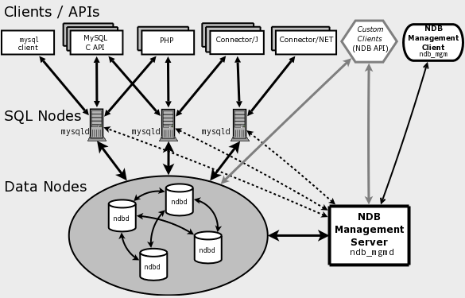
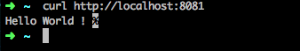
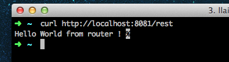
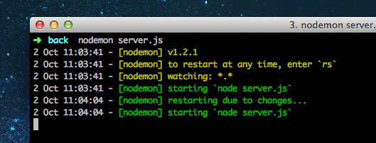
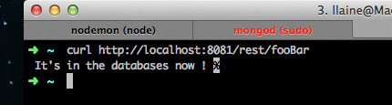
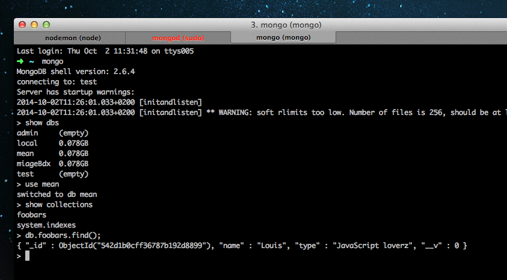

So today, a little article on the scalability of PHP legacy applications.
Use case
Suppose we have a codebase in PHP which we can not change.
How to scale the app to 500 request by second ?
What we have :
PHP 5.3
Spaghetti code
Strong dependency coupling
MySQL Database
Okay let’s talk a little bit about scalability :
Scalability : is ability of a system, network, or process to handle a growing amount of work in a capable manner or its ability to be enlarged to accommodate that growth._
Horinzontal scalability : means to add more nodes to a system, such as adding a new computer to a distributed software application
Vertical scalability : means to add resources to a single node in a system, typically involving the addition of CPUs or memory to a single computer.
Back to the use case
In order to begin sovling the problem, let’s remind something. PHP is based on HTTP which is stateless by default.
Which mean that the whole memory is destroyed after the request.
That’s a pretty good news! :)
BUT
Everything is stateless, expect from the session
How to deal with the session ?
Install memcacheD
In the php.ini
session.save_handler = memcached
session.save_path = goteMemcacheD :port
Reloading Apahe!
Aaaaaand that’s all !!
Performance
opCode cache
APC for php 5.3 (which you shouldn’t use) : apc.stat = 0 (avoid I/O on disk)
By default include in PHP 5.5
- opcache.enable = on in the php.ini
- opcache.validate_timestamp = 0 (avoid I/O on disk)$
The database (Oh sh*t)
the database is most of the time the last things that is the problem (is this often your codebase).
But we can optimize it :) !
How to ?
Provide a loooot of ram (much than the database size)
innodb_buffer_pool_size needs to be as high as possible (5-6GB)
mysql_query_cache with a good value.
Create a looooots of index in column which are you for ‘WHERE’ statements or joins.
Doctrine 2
Use as much as you can eager loading.
You also can use a mysql_cluster (which is quite complicated to install but it’s like the rolls royce of mysql).

Infrastructure
Use a varnish, for statics assets.
Provisionning tools like Ansible for servers configuration.
After a great day at bdx.io, i’m going to present you the newest features about ECMAScript 6.
Intro
ES6 is the new version of JavaScript.
Will be released at mid 2015.
Let’s see what’s new !
Class
12345678910111213
classCar{// keyword which define the constructor and the class attributesconstructor(name="Tesla"){// ES6 take default valuesthis.name=name;}toString(){return"name = "+this.name;}}lettesla=newCar();tesla.toString()// name = Tesla
importVehiculefrom'./Vehicule';// No .js extensionclassCarextendsVehicule{constructor(name="Tesla"){super(name);}vroom(){console.log("Hey i'm a "+this.name+" car ! ");}}exportdefaultCar;
main.js
123
importCarfrom'./Car';letcar=newCar();car.vroom()
Fat arrow operator
1234567
// Before ES6 varplop=function(name){return"Plop "+name;};// With ES6varplop=(name)=>return"Plop "+nameconsole.log(plop("Louis"))// Plop Louis
Note
Can’t be newable
No arguments parameters instead it’s more about REST parameters.
Do not use the Fat arrow to define objects function.
var vs let
Scope
var is scoped to the nearest function block (or global if outside a function block), and let is scoped to the nearest enclosing block (or global if outside any block), which can be smaller than a function block.
12345678910111213141516
// let functionfoo(){// bar not visible out here.for(letbar=0;bar<10;++bar){// bar is visible }// bar is not visible}// varfunctionbar(){// foo is visible out here.for(varfoo=0;foo<10;++foo){// foo is visible }// foo is visible}
The let instruction also prevent you from redudant variables.
Let declare variables at the beginning of the current block. If we re declare the variables again at the same level a TypeError will be thrown.
1234
if(x){lettoto;lettoto;// TypeError thrown.}
Promises
Promise have been around in JavaScript with some libraries as Q, WinJS, when but they new arrived natively in JavaScript!
12345678910111213141516171819
letpromise=newPromise((resolve,reject)=>{// Make an async callif(/* everything is fine now */){resolve("Yehee");}else{reject("Too bad");}});// In a theorical waypromise.then((data)=>{console.log(data);}).catch((error)=>{console.log(error);});
Let’s see an little example with an ajaxRequest for example.
functionget(url){// Return a new promise.returnnewPromise(function(resolve,reject){// Do the usual XHR stuffvarreq=newXMLHttpRequest();req.open('GET',url);req.onload=function(){// This is called even on 404 etc// so check the statusif(req.status==200){// Resolve the promise with the response textresolve(req.response);}else{// Otherwise reject with the status text// which will hopefully be a meaningful errorreject(Error(req.statusText));}};// Handle network errorsreq.onerror=function(){reject(Error("Network Error"));};// Make the requestreq.send();});}// Use get('story.json').then(function(response){console.log("Success!",response);},function(error){console.error("Failed!",error);});
Strings
You can easily template string.
1234
letfirstName="John",lastName="Coltrane";console.log(`Hello,${firstName}${lastName}`);// Hello John Coltrane
We can also made some multi lines strings.
12345678910
console.log(`Hello${firstName}${lastName}`);/* Hello John Coltrane*/
Mixin
Object.assign
123456789101112
letsuperman={firstName:"Clark",lastName:"Kent"};letabilities={fly():=>console.log("I can fly")};Object.assign(superman,abilities);superman.fly();// I can fly !
Array.from
Before looping throw a document.querySelector it was necessary to change first the result in an Array.
123456789101112
// Before ES6varitems=Array.prototype.slice.apply(document.querySelectorAll("h1"));items.forEach(function(item){item.innerHTML="Hello";});// With ES6Array.from(document.querySelectorAll("h1")).forEach((item)=>item.innerHTML="Hello")
Maps
Like in any other languages (or not) the maps arrived natively in JavaScript!
12345678910111213141516171819
letmap=newMap();map.set("myKeyOne",{first:"firstValueOne",last:"lastValueOne"});map.set("myKeyTwo",{first:"firstValueTwo",last:"lastValueTwo"});console.log(map.size)// 2console.log(map.has("myKeyOne"))// true console.log(map.get("myKeyTwo"))// { first:"firstValueTwo", last:"lastValueTwo" }// We can also loop through the maps.for(letkeyofmap.keys()){console.log("Key: %s",key);}/* Key: myKeyOne, Key: myKeyTwo */for(letvalueofmap.values()){console.log("Value: %s %s",value.first,value.last);}
Conclusion
We’ve seen all the newest features which are very exciting.
In the next article we’ll see how to code with ES6 using a transpiler called traceur.
Today a small article about a new web standard, the webSockets.
This new protocol allow to create a bi-directional connexion between the client and the server in order to solve some HTTP problems and his uni-directional connexion.
You can easily create real time application as games, chat and so.
The server is able to “push” informations on the client even if the client hasn’t asked for.
Use case
We are going to create a simple chat.
The user can send messages to connected clients with a username from a web page
The user can send messages to connected clients from console.
The server is able to count the number of connected client and trace the conversation.
Tree directory
Init the repository
1
$ mkdir webSocket &&cd webSocket ; npm init
We are going to use a simple library called websocket which is the (mostly) pure JavaScript implementation of the WebSocket protocol versions 8 and 13 for Node.
varWebSocketServer=require('websocket').server,http=require('http'),lesConnexions=[]// Will store all the connection// process HTTP request. Since we're writing just WebSockets server// we don't have to implement anything.,server=http.createServer(),PORT=1337;server.listen(PORT);/* bootstraping the HTTP server */wsServer=newWebSocketServer({httpServer:server});log("Server listenning on "+PORT+" ...");/* when a new client is trying to connect on the server */wsServer.on("request",function(req,res){varconnection=req.accept(null,req.origin);// add the new connection in the current connectionlesConnexions.push(connection);connection.on("message",function(message){// When a message is send});connection.on("close",function(){// When the connection is closed});});/*** Log into the NodeJS console* @item : the item to be logged*/functionlog(item){console.log("["+newDate().toDateString()+"] "+item);}
This is the basic implementation of the server with websocket package.
Whe have here a server listenning to the 1337 port.
Client
Console
The websocket library allow you to easily implement a client in a simple console app.
client.js
123456789101112131415161718192021222324252627
varWebSocketClient=require('websocket').client;varclient=newWebSocketClient();client.on('connectFailed',function(error){console.log('Connect Error: '+error.toString());});client.on('connect',function(connection){console.log('WebSocket client connected');connection.on('error',function(error){console.log("Connection Error: "+error.toString());});connection.on('close',function(){console.log('echo-protocol Connection Closed');});connection.on('message',function(message){// when a message is send});});client.connect('ws://127.0.0.1:1337/');
Browser version
We also want to discuss through the tiny chat from a internet browser so let’s create simple index.html file.
Note : I use bower to manage my libraries, in this case it’s only jQuery.
123456789101112131415161718192021222324
<!DOCTYPE html><htmllang="en"><head><metacharset="UTF-8"><title>WebSocket</title></head><body><divid="head"><spanid="state"></span><inputtype="text"id="name"placeholder="Pseudo"value="webUser"></div><divid="chatMessages"><inputtype="text"id="input"><ulid="messages"></ul></div><script src="bower_components/jquery/dist/jquery.js"></script><script>// The client javascript implementation</script></body></html>
Related to the html file, we need to use the simple API to connect to our server.
/*** Send a message with a username* @content : the content of the message* @username : the username of the message*/functionsendMessage(content,username){if(!content||!username)return;varmsg={txt:content,username:username};connection.send(JSON.stringify(msg));}(function($){varstate=$("#state"),input=$("#input"),messages=$("#messages"),username=$("#name");window.WebSocket=window.WebSocket||window.MozWebSocket;varconnection=newWebSocket('ws://127.0.0.1:1337');connection.onopen=function(){// connection is opened and ready to usestate.html("open");};connection.onerror=function(error){// an error occurred when sending/receiving datastate.html("error ");input.prop('disabled',true);username.prop('disabled',true);};connection.onmessage=function(message){// message is send};input.keydown(function(e){/* when the enter key is pressed */if(e.keyCode===13){vartheMsg=$(this).val();sendMessage(theMsg,username.val());$(this).val("");}});})(jQuery);
Now let’s look at how to manager the sending and receiving of messages.
Server
12345678910111213141516171819202122
// In the request callback. log("connection from "+connection.remoteAddress);log("currently "+lesConnexions.length+" clients");connection.on('message',function(message){// We only wants to send char, not bytes.if(message.type==="utf8"){// for each connected clientsfor(vari=lesConnexions.length-1;i>=0;i--){lesConnexions[i].sendUTF(message.utf8Data);}}});connection.on('close',function(connection){lesConnexions.splice(lesConnexions[lesConnexions.length],1);log("connection closed");});
Client - console
The console implementation will be a little bit different because we need to get the user inputs.
I’m going to use the sys library.
client.js
12345678910111213141516171819202122232425262728
varsys=require("sys");varstdin=process.openStdin();// ...connection.on('message',function(message){if(message.type==='utf8'){varmsg=JSON.parse(message.utf8Data);if(msg.username===undefined)msg.username="default";console.log("--> ["+msg.username+"] : "+msg.txt+"");}});// add callback for user inputsstdin.addListener("data",function(d){// note: d is an object, and when converted to a string it will// end with a linefeed. so we (rather crudely) account for that// with toString() and then substring()varmsg=d.toString().substring(0,d.length-1);if(connection.connected||msg){connection.sendUTF(JSON.stringify({txt:msg,username:"console"}));}});
Now that we have both part operationnal, let’s create a simple application.
I’m a music lover, so why don’t create a simple music library. :)
Models
song.js
1234567891011121314151617181920
varmongoose=require('mongoose'),Schema=mongoose.Schema;/*** The song model * @name : String, the name* @author: String the author* @releaseDate : String, the release date of the song * @styles: Array of string, represent all the style a song may have. */'use strict';exports.schema=newSchema({name:String,author:String,releaseDate:String,styles:[String]});module.exports=mongoose.model('music',exports.schema);
library.js
123456789101112131415161718
varmongoose=require('mongoose'),Schema=mongoose.Schema;/*** The library model * @name : String, the name* @creationDate : Date.now* @releaseDate : String, the release date of the song * @styles: Array of string, represent all the style a song may have. */'use strict';exports.schema=newSchema({name:String,creationDate:{type:Date,default:Date.now},music:[Schema.Types.ObjectId]});model.exports=mongoose.model('library',exports.schema);
We will create a simple CRUD for the library and for the song.
Back end
Library models
What we are going to create, is a RESTFul API.
Using express and mongoose functions to save/find and send our datas.
I create CRUD functions, which are going to be called by my REST Service
For the application, i create a simple helpers, which is going to help us handle the mongoDb response.
helpers/utils.js
123456789101112131415
// .../** * Handle a MongoDb response * @param err * @param r * @returns {*} */helper.handleResponse=function(err,r){try{if(err)throwerr;}catch(e){helper.log(e.message);}returnr;};
/** * GET -> /rest/library/ */router.get('/',function(req,res){/* find all document in the library collection */libraryRepo.find().exec(function(err,r){/* handle response */res.send(helpers.handleResponse(err,r));});});/** * GET -> /rest/library/:id */router.get('/:id',function(req,res){/* _id ObjectId type. */libraryRepo.findOne({_id:newmongoose.Types.ObjectId(req.params.id)}).exec(function(err,r){/* handle response */res.send(helpers.handleResponse(err,r));});});/** * POST -> /rest/library */router.post('/',function(req,res){/* create a new library document */newlibraryRepo({name:req.body.name,music:req.body.songs}).save(function(err){/* send a 200 if everything ok ! */res.status(helpers.handleResponse(err,200)).end();});});
Mongoose is very functional and uses the same query language as the MongoDb console. Very helpful to train.
I also use exec() in all my mongo call.
This function, allow you to chain database queries and execute them at the end with all the predicate you selected.
You also notice that i used ObjectId to find by id.
ObjectId is a 12-byte BSON type, constructed using:
a 4-byte value representing the seconds since the Unix epoch,
a 3-byte machine identifier,
a 2-byte process id, and
a 3-byte counter, starting with a random value.
In MongoDB, documents stored in a collection require a unique id field that acts as a primary key. Because ObjectIds are small, most likely unique, and fast to generate, MongoDB uses ObjectIds as the default value for the id field if the _id field is not specified.
Testing the API
To test the service, i used PostMAN
which is REST client for testing API.
You can use old good curl -X POST, but Postman is very usefull.
So after populating my database with some documents, i could get all resources..
/** * GET -> /rest/song/ */router.get('/',function(req,res){/* fetch all the song */songRepo.find().exec(function(err,r){/* handle response */res.send(helpers.handleResponse(err,r));});});/** * GET -> /rest/song/:id */router.get('/:id',function(req,res){/* _id ObjectId type. */songRepo.findOne({_id:newmongoose.Types.ObjectId(req.params.id)}).exec(function(err,r){/* handle response */res.send(helpers.handleResponse(err,r));});});/** * POST -> /rest/song * Create a new song. */router.post('/',function(req,res){/* create a document from the POST params */newsongRepo({name:req.body.name,author:req.body.author,releaseDate:req.body.releaseDate,styles:req.body.styles}).save(function(err){/* send a 200 code if everything's ok */res.send(helpers.handleResponse(err,200));});});
The same thing as before when it’s about testing the new routes.
/** * @ngdoc service * @name frontApp.libraryService * @description * # libraryService * Service in the frontApp. */angular.module('frontAppServices',[]).factory('libraryService',['$http','BASE_URL','$q',function($http,BASE_URL){return{/** * GET -> Get all the libraries * @returns {HttpPromise} */get:function(){return$http.get(BASE_URL+'/rest/library');},/** * GET -> Get one library * @param id * @returns {HttpPromise} */getById:function(id){return$http.get(BASE_URL+'/rest/library/get/'+id);},/** * POST -> Create a new library * @param libInfos */createNew:function(libInfos){console.log(libInfos);},/** * PUT -> Add new song in the current library music array. * @param idLibrary * @param theNewSongArray * @returns {HttpPromise} */addSong:function(idLibrary,theNewSongArray){return$http({method:'PUT',url:BASE_URL+'/rest/library/update/'+idLibrary,data:{songs:theNewSongArray}});}};}]);
Don’t forget to add this module in the main module or angular won’t be able to load it.
/* the current library id */varlibraryId=$routeParams.id,newSongToAdd=[];/** * Handle $http promise * @param response * @returns {*} */functioncheckForResponse(response){if(response.status===200){returnresponse.data;}}/** * Add or remove the item from the array * @param item */functionaddToArray(item){varposition=newSongToAdd.indexOf(item);/* when > -1 mean dat is present */if(position===-1){newSongToAdd.push(item);}else{newSongToAdd.splice(position,1);}}/** * add the selected song to the song array. * @param idSong */$scope.addSong=function(idSong){addToArray(idSong);};/** * Validation the new array and save him in the database. */$scope.validNewSongs=function(){/* let's assume that the array isn't empty */if(newSongToAdd.length>0){libraryService.addSong(newSongToAdd).then(function(data){console.log(data);});}};/* call to libraryService which retrive all resources */libraryService.getById(libraryId).then(function(data){/* store the library information */varinformationsLibrary=checkForResponse(data);/* display them in the partials */$scope.currentLibrary=informationsLibrary;$scope.isMusic=informationsLibrary.musics===undefined;});/* call to the songService which retrieve all resources */songService.get().then(function(data){/* display all song in the partials. */$scope.songs=checkForResponse(data);});
You can now manipulate all resources.
Conclusion
In conclusion, we saw how to create a communication between the two layer by following good manners.
Feel free to comments, for any information :)
You can of course, find all the code we seen in github
The MEAN term refer to a collection of JavaScript based technologies used to develop web applications.
This article explores the basics of the MEAN stack and show how to create a simple application.
MEAN.IO vs you own
There is already a boilerplate of the stack, providing a complete architecture to deal with this kind of application.
The topic of this article is to show you how to create your own MEAN stack.
It’s not a tutorial about mean.io
Two parts ?
The first part of this article is a simple introduction, the second part is a concrete example of the stack.
Technologies
NodeJS is a server side JavaScript execution environment. It’s a platform built on Google Chrome’s V8 JavaScript runtime. It helps in building highly scalable and concurrent applications rapidly.
MongoDB is a schemaless NoSQL database system. MongoDB saves data in binary JSON format which makes it easier to pass data between client and server.
Express is lightweight framework used to build web applications in Node. It provides a number of robust features for building single and multi page web application. Express is inspired by the popular Ruby framework, Sinatra.
AngularJS is a JavaScript framework developed by Google. It provides some awesome features like the two-way data binding. It’s a complete solution for rapid and awesome front end development.
Prerequisites
During all the tutorial i’m on Maverick 10.9.5, follow this tutorial on Unix system will be almost similar.
I use brew to manage the packages.
MongoDB
123456
$ brew update
$ brew install mongodb # Install MongoDB$ mongod # To run the mongodb server$ mongo # To run the mongo cli
NodeJS
1
$ brew install node # Install NodeJS
NPM packages.
NodeJS come with his own package manager called npm.
This package will be helpful to install the modules we need.
Let’s see how to install them.
I use the --save argument in order to add this module in the package.json file, which describe the configuration of our application.
Express
The web framework.
1
$ npm install --save express
Mongoose
Mongoose provides a straight-forward, schema-based solution to modeling your application data and includes built-in type casting, validation, query building, business logic hooks and more, out of the box with NodeJS.
1
$ npm install --save mongoose
Yeoman
Yeoman is a generator in order to scaffold a robust and productive base for your project.
There are a lots of generator. We are going to use the angular
one.
It will be very convenient and usefull to start our front-end part.
1
$ npm install -g --save generator-angular
npm will fetch all the modules and install them.
1
$ npm init
This utility will walk you through creating a package.json file.
Enter your information, and then let generate the file.
Directory structure
You can create your own, i suggest a simple application tree, reusable and flexible.
the directory structure
12345
$ ls
back/
front/
node_modules/
package.json
Back end part
Server
We are going to create our server.
back/server.js
123456789101112
(function(){varexpress=require('express'),app=express();app.get('/',function(req,res){res.send('Hello World ! ');});app.listen(8081);})();
We have here a simple express instance that listens on 8081 port and sends a string when the route is called.
Launch the node instance with node server.js and fetch the route.

Ok that’s cool, we now have our server.
Let’s organize us by creating folders.
models : This folder will be dedicated to our MongoDb Schema.
routes : this folder will contains all the controller corresponding to routes.
mean/back/
1234
.
├── server.js
├── models
└── routes
Routing
Let’s first create a route by creating a simple file.
routes/index.js
1234567891011121314
module.exports=(function(){'use strict';// The express modulevarexpress=require('express'),router=express.Router();// Routing service of express //Our default route router.get('/',function(req,res){res.send("Hello World from router ! ");});returnrouter;})();
We shift all the routing logic in a dedicated controller.
This will be more scalable, testable and organized.
app.user indicate to express that all route which begin with /rest will be redirected to routes which are in the routes/index.js file.

Helpers
You notice, that each time we made a modification to any NodeJS file, we must rerun the server, which is not very handy.
Fortunatly a npm package, called nodemon is here to assure hot reload code for NodeJS files.
install nodemon
12
$ npm install -g nodemon # Install the package$ nodemon server.js # Run the server

Another intersting feature would be the ability to have a log feature, that will simply display an output into the node.js console each time a route has been called.
server.js
1234567
// The logging functionfunctionlog_node(callback){returnfunction(req,res,next){console.log(newDate().toDateString()+" : "+req.method+" => "+req.url);callback.call(null,req,res,next);}}
Apply the function to the use method.
server.js
12
// Change the line and add the functionapp.use('/',log_node(index));
Query the route and you will see an output in the console !
This function, is very simple and you can obviously create a specific module, with some filter for particular route, colors, etc.
Mongoose + NodeJS
Now that we isolate the business layer, it’s time to use the persistence layer.
I present you earlier mongoose which provides a straight-forward, schema-based solution to modeling your application data and includes built-in type casting, validation, query building, business logic hooks and more, out of the box.
Now create some connection function, in order to connect to mongo.
server.js
123456789101112131415
// Connectionmongoose.connect('mongodb://'+conf.mongodb.host+'/'+conf.mongodb.db,conf.mongodb.opt);// Assign event to the MongoDB instance.mongoose.connection.on('open',function(ref){console.log("connection to mongo server "+conf.mongodb.host);});mongoose.connection.on('error',function(err){console.log(err);});mongoose.connection.on('disconnected',function(){console.log("Disconnected");});
Cool we can now connect our application to the database.
Remeber to start the MongoDb server with mongod before, launching the server or a beautiful error will show up ;) !
Data models
Data in MongoDB has a flexible schema. Collections do not enforce document structure. This flexibility gives you data-modeling choices to match your application and its performance requirements.
In mongoDB, the data models are representend by Schema (which are simply JSON object).
Mongoose, allow us to easily design our pattern of data.
Create one called fooBar
models/fooBar.js
123456789101112131415161718192021222324
varmongoose=require('mongoose'),Schema=mongoose.Schema;/*** fooBar model. * name : String* type : String * toString() : String * * A really nice model. */'use strict';exports.schema=newSchema({name:String,type:String});exports.schema.statics.toString=function(){return"Hello i'm "+this.name+" a "+this.type+" schema ! ";};// Very important, in order to compile the mongoose's schema definition.module.exports=mongoose.model('fooBar',exports.schema);
Let’s use this schema in our controller.
routes/index.js
12345678910111213
varfooBar=require('../models/fooBar');...router.get('/fooBar',function(req,res){newfooBar({name:"Louis",type:"JavaScript loverz"}).save(function(err){if(err)throwerr;res.send(" It's in the databases now ! ");});});
I should have normaly use a POST method, in order to persist the new document, but for the purpose of the example, i use a GET.

Open a new terminal and go the mongo cli to verify that our model has beed saved.

Cool, isn’t it ? :)
Front-end part.
It’s not an obligation to use that tool, and you can grab all the angular component by hand and generate your own directory structure.
1
$ cd front && yo angular
This command will, create the basic architecture of the angular application.
There are small questions in order to choose usefull library as angular-route or angular-animate.
Select angular-route.
Yeoman will fetch and install all the library you need with npm install and bower install.
The angular-generator comes with a task manager called Grunt and a package manager called Bower.
Grunt will be very usefull to launch task as minification, test or hot-reload.
Bower will be used to fetch and install packages from all over, taking care of hunting, finding, downloading, and saving the stuff you’re looking for. Bower keeps track of these packages in a manifest file, bower.json.
Begin with yeoman
Create a simple route
Yeoman as a good generator, will allow us to save time and will create very quickly all file required.
For example let create our first route.
1
$ yo angular:route foo
Yeoman going to automaticaly add a route in app.js